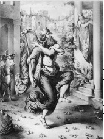

Kral Şaul’dan sonra yönetime geçen Kral Davud, İsrail’in ikinci ve en büyük kralıydı. Yesse’nin oğluydu ve bir çoban olarak yetiştirildi. Hikâyesi İncil’de, Samuel’in kitabında anlatılır ve belki de en çok “Davud ve Goliath” hikâyesiyle bilinir.
Goliath bir Filistinli’ydi ve bazılarınca üç metre boyunda olduğu söylenen bir devdi. Davud’la karşılaştığında Filistinliler İsrailliler’le savaştaydı. Ancak, savaşa girmeden önce Goliath İsrailliler’e onu yenebilecek bir savaşçı göndermeleri için meydan okudu. Goliath bu meydan okumayı kırk gün boyunca her gün tekrarladı, ama hiçbir İsrailli bunu kabul etmedi. Sonunda, o sıralarda bir ergen çocuk olan ve o an, sadece savaştaki büyük kardeşlerine yiyecek getirdiği için orada bulunan Davud, öne çıktı.

Kral Şaul, Davud’un cesaretiyle neşelendi ve ona bir silah ile bir zırh sundu, ama Davud kabul etmedi. Goliath ile karşılaşmaya yanına bir sapan ve birkaç taş alarak gitti. Goliath saldırıya geçmeden önce, Davud sapanıyla bir taş atıp Goliath’ı başından vurarak yere devirdi. Ardından Goliath’ın kılıcını kaptı ve son bir hamleyle onun kafasını uçurarak zafere ulaştı.
Bundan sonra Davud’un ünü tüm İsrail’e yayıldı. Kral Şaul da onu bir tehdit olarak algılamaya başlayıp, öldürtmek istedi. Fakat Şaul’un oğlu ve mirasçısı olan Yonatan, Davud’la arkadaş oldu ve onun hayatta kalmasına yardım etti. En sonunda Davud, Şaul’dan sonra İsrail’in ikinci kralı olarak seçildi.
Davud kral olunca İsrail’in kuzey ve güney kavimlerini birleştirdi, başkenti Kudüs’e taşıdı. MÖ 1000 civarından başlayarak yaklaşık kırk sene ülkesini ciddi bir zorlukla karşılaşmadan yönetti. Krallığı esnasında Davud, Batşeba isminde evli bir kadına aşık oldu ve onu hamile bıraktı. Günahını örtmek için kadının eşine ordusunda bir asker olmasını emretti ve sonrasında onu öldürüleceği ön cepheye yolladı. Karşılığında Tanrı, bir peygamber olan Natan’ı, Davud’u suçuyla yüzleştirmek için gönderdi.
Yahudiler Tanrı’nın, kusurlu da olsa Davud’a soyunun İsrail’i sonsuza dek yöneteceğini vâdettiğine inanırlar. Bu nedenle Yahudi geleneğine göre Mesih’in, Davut’un torunu olacağına inanılır.
EK BİLGİ:
1. Goliath’ın hipofiz bezindeki bir bozukluk sonucu anormal bir cüsseye sahip olduğu söylenir. Bu bozukluğun varsayılan bir diğer göstergesi, Davut’un Goliath’a fark ettirmeden ona nasıl yaklaşabildiğini açıklayan, yanlarını görememe hastalığı olabilir.